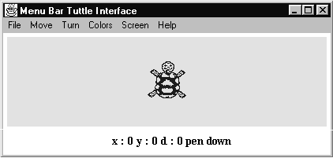
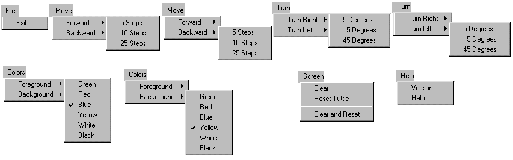

The appearance of the MenuBarTuttle interface, under Windows '95, is illustrated in Figure 6.1. It shows the main menu bar at the top of the interface, the feedback panel at the bottom and the tuttle in the middle.

Figure 6.1 The MenuBarTuttle interface, (with the drawing area reduced in height).
The various pull-down menus attached to the menu buttons on the menu bar at the top of the application are shown in Figure 6.2.

Figure 6.2 The MenuBarTuttle interface menu structure.
The first pull-down menu, the File menu, has a single MenuItem labeled Exit… The three dots following the label on the button indicate that when it is activated a dialog will be posted, which the user will interact with to complete the operation. In this example it is a yes/ no confirmation of the request to exit the application, as will be described below.
The second pull-down menu, the Move menu, has two items labeled Forward and Backward. Each item is followed by a right facing triangle which indicates that, when activated, the item will post a second, cascading, menu. Both of these cascading menus are shown in Figure 6.2 and each consists of three items allowing the tuttle to be moved by 5, 10 or 25 steps. The third pull-down menu, the Turn menu, is essentially identical in its structure having two items labeled Turn Right and Turn Left, each of which leads to a cascading menu with options to turn by 5, 15 or 45 degrees.
The fourth pull-down menu, the Colors menu, also has two cascading menus controlled by items labeled Foreground and Background. Each cascading menu contains six CheckboxMenuItems behaving as if they were radio buttons allowing only one item to be selected at a time, the currently selected item indicated by a preceding tick. The menus in Figure 6.2 indicate that the current foreground color is Blue and the background is Yellow.
The Screen menu commences with three simple items which cause the screen to be cleared without moving the tuttle, move the tuttle to the center of its area and for both a re-centering of the tuttle and clearing of the screen to be performed. The last option of this part of the menu is separated from the previous two by use of a separator. The Screen menu is completed, following another separator, by two check box items allowing the state of the tuttle's pen to be controlled. The final menu, the Help menu, offers access to two dialogs labeled Version… and Help…
Thus the complete menu system contains five main menu buttons and associated pull-down menus, six cascading menus, three dialog panels, eighteen menu items which will have an effect upon the tuttle or its interface and fourteen check box items. In addition there are three dialog panels the: exit, help and version dialogs which are shown when the appropriate menu item is activated by the user.
In this part of the chapter only a selection of these elements will be described in detail, the remaining items are essentially identical and details of how to obtain the complete source code is located at the start of appendix B.